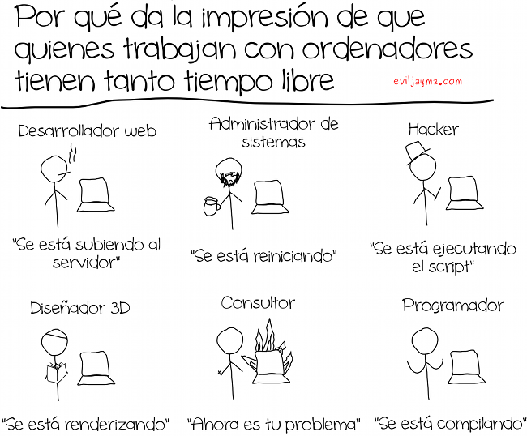

|  |

Aunque la anterior viñeta puede parecer algo exagerada, lo cierto es que existe alrededor de los profesionales de la informática cierto convencimiento de que a veces trabajamos menos de lo que afirmamos, o incluso de que es el ordenador el que trabaja por nosotros. Como todos los mitos, tiene un poco de realidad (son muchas las excusas que podemos urdir para explicar por qué no estamos haciendo nada en un momento dado) y algo de exageración.
No es que quiera tirar piedras sobre nuestro propio tejado, pero tenemos que admitir que los informáticos tenemos un problema inherente a nuestro trabajo y que no se da en otras profesiones: nuestra herramienta de trabajo es también una de nuestras principales herramientas de ocio. Bueno, quizá algunos deportistas y actores porno puedan decir lo mismo. Pero la cuestión es que, aunque se nos vea muy activos, si no se ve nuestra pantalla puede ser difícil decir si estamos currando
Esto da lugar a una curiosa paradoja: a veces estamos perdiendo el tiempo, pero damos la impresión de trabajar por estar tecleando o usando el ratón compulsivamente; mientras que otras veces estamos pensando en la resolución de un problema, pero aparentemente se podría decir que no estamos haciendo nada. Esta tira cómica de Sinergia Sin Control, aunque con cierta ironía, muestra bastante bien la realidad de que para un programador estar en frente del ordenador no significa estar trabajando.
Y, del mismo modo, tal y como nos contaba Jorge Rubira al darnos sus consejos para desconectar del trabajo, muchas veces no podemos evitar llevarnos el trabajo a casa, aunque no portemos un solo fichero y toda la carga que nos llevemos sea mental.
Imagen original | The world (and word) of jaymz
| |